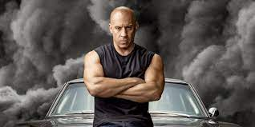
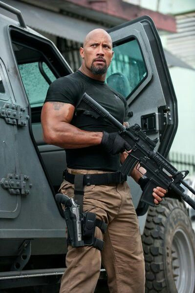

Fast and Furious is an action-packed film combining thrilling car chases, intense action, and a gripping story.
Directed by Rob Cohen in 2001, it follows Dominic Toretto (Vin Diesel) and Brian O'Conner (Paul Walker) as they
navigate street racing and high-speed heists. The movie emphasizes themes of family, loyalty, and trust,
showcases a diverse cast, iconic cars, and an energetic soundtrack that perfectly complements the action.

Dominic "Dom" Toretto (Vin Diesel)
The leader, a highly skilled driver and mechanic whose life is centered around his family and their code of loyalty.
 Brian O'Conner (Paul Walker)
Brian O'Conner (Paul Walker)
An ex-cop who becomes Dom's best friend, brother-in-law, and a crucial member of the crew.
 Letty Ortiz (Michelle Rodriguez)
Letty Ortiz (Michelle Rodriguez)
Dom's tough and fearless wife, a talented street racer, and a key figure in the crew's operations.
 Mia Toretto (Jordana Brewster)
Mia Toretto (Jordana Brewster)
Dom's younger sister and Brian's wife. She provides a grounded presence and is a core part of the family unit.

Luke Hobbs (Dwayne Johnson)
A formidable DSS agent who eventually joins their cause.
 Deckard Shaw (Jason Statham)
Deckard Shaw (Jason Statham)
A former antagonist who becomes a reluctant ally.
 Jakob Toretto (John Cena)
Jakob Toretto (John Cena)
Dom and Mia's estranged younger brother, who reconciles with his siblings.
 Mr. Nobody (Kurt Russell)
Mr. Nobody (Kurt Russell)
A mysterious covert ops leader who hires the crew for missions.